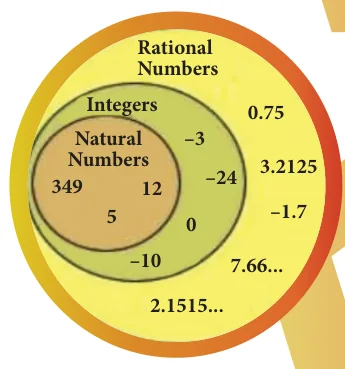
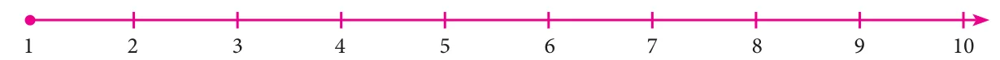
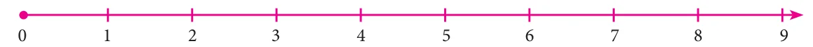
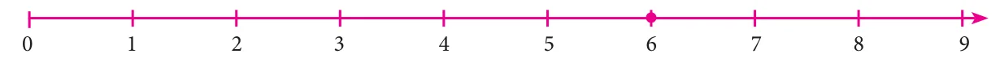
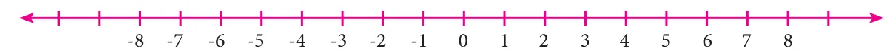
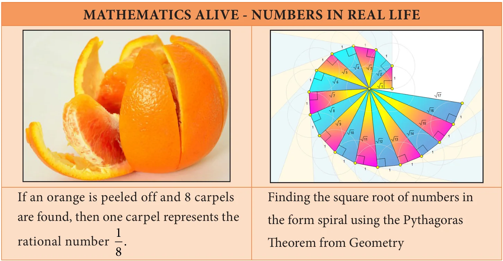

Learning Objectives
- To understand the necessity for extending fractions to rational numbers, to represent rational numbers on the number line and to know that between any two given rational numbers, there lies many rational numbers.
- To learn and perform the four basic arithmetic operations and solve word problems on rational numbers and simplify expressions with atmost three brackets.
- To understand the properties of rational numbers.
- To compute the square, the square root, the cube and the cube root of numbers.
- To make a rough estimate of the square roots and the cube roots of numbers.
- To express numbers in exponential form and understand the laws of exponents with integral powers.
- To identify and express the numbers in scientific notation.
1.1 Introduction
Let us recall the different types of numbers which we have already learnt in our earlier classes. When we want to count, it is natural to start with numbers 1, 2, 3, 4, 5, ... Isn't it?
These are all called as Counting numbers or Natural numbers and their collection is denoted by \(\mathbb{N}\). The use of three dots at the end of the list is a notation to show that the list keeps going forever.
The natural numbers can be visualized as a ray marked with these numbers:

Fig 1.1
Consider the situation that yesterday my purse had money, say ₹8, but today the purse may be empty. How many rupees are there in the purse now? How to denote this emptiness? Here comes the concept of zero which evolved to symbolize the idea of emptiness. The concept of zero, though quite natural now, was not normal to early humans. Only after hundreds of years people started thinking of it as an actual number. The difficulty was solved when the Indian Mathematicians provided the symbol for zero. The natural numbers system with this additional number zero became Whole numbers. The whole numbers can be visualized now as follows:

Fig 1.2
The system of whole numbers is denoted by \(\mathbb{W}\).
Even zero was not sufficient to solve all problems. Think what happens when 4 is taken away from 6?
Draw a number line up to, say 9. Mark 6 by a dot on it.

Fig 1.3
We know that, to subtract 4, we need to go 4 steps to the left side from 6. We will land on 2 and so the answer is 2. But what will happen if we want to subtract 6 from 4? This situation is where the humans needed (and created) negative numbers.

Fig 1.4
But, how can a number be negative? Simple! Just think of them as numbers less than zero. Including the negative integers with the whole numbers, we get the list of numbers called the Integers. The integers consist of zero, the natural numbers and the negatives of the natural numbers and it consists a list of numbers that stretch in either direction without end. The entire collection of integers is denoted by \(\mathbb{Z}\).
